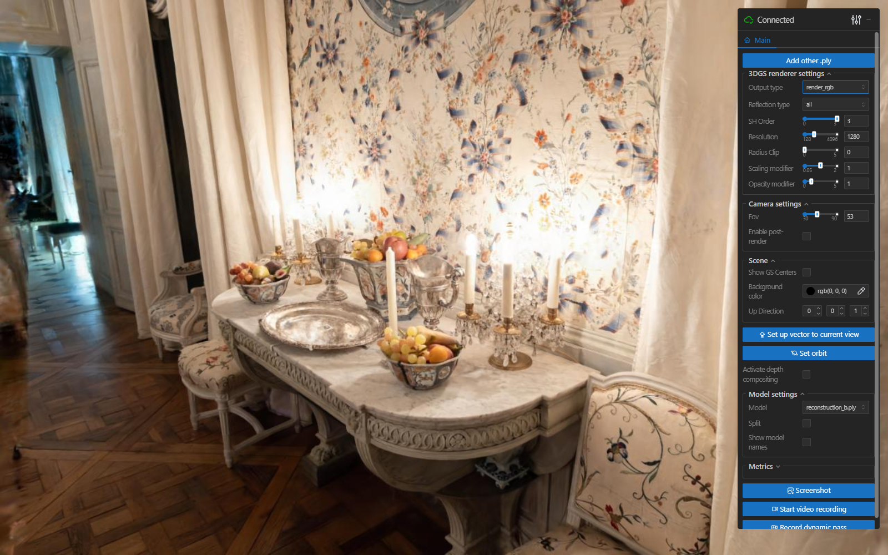
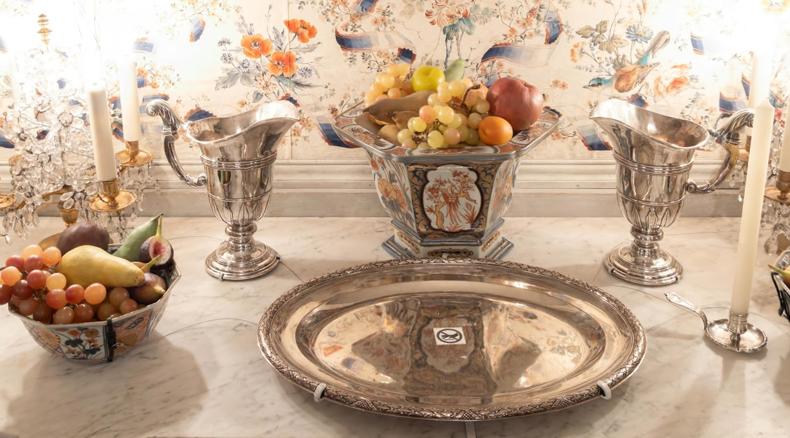
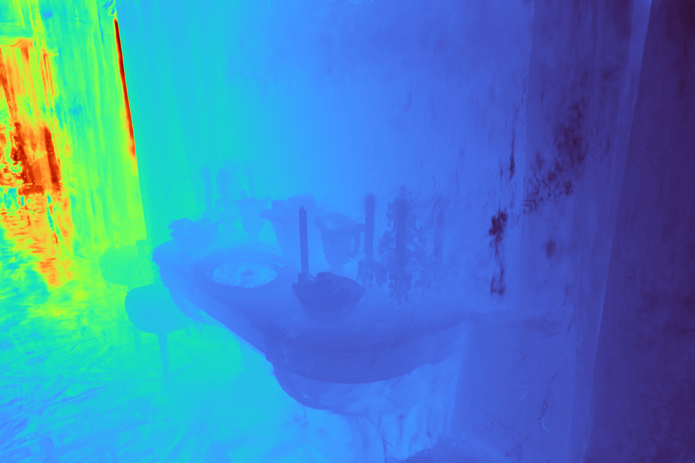
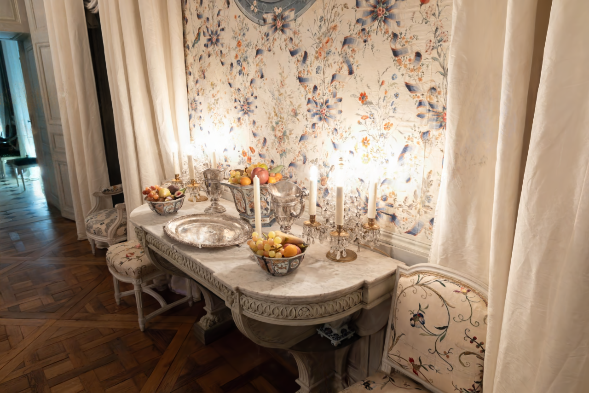

01 / ENTRAÎNEMENT
Observer en direct
Suivre la reconstruction, puis mettre l’entraînement en pause et le reprendre.
Enregistrement réel · 22 s
R&D · VISION PAR ORDINATEUR · 3D
J’ai conçu, développé et assuré le support d’outils de reconstruction 3D Gaussian Splatting. Cette page montre le lien entre entraînement, inspection des résultats et export.

OUTILS DÉVELOPPÉS
Suivre la reconstruction, puis mettre l’entraînement en pause et le reprendre.
Enregistrement réel · 22 s
Deux reconstructions de la même scène, avec un séparateur déplaçable.
Le clip illustre le viewer, pas un benchmark des méthodes.
SH · SG · Voronoi : les modèles d’apparence ↓Déclencher une capture et un enregistrement depuis le viewer.
J’ai développé la navigation par index, les commandes précédent/suivant et la lecture à cadence réglable pour inspecter des séquences de modèles.
La mémoire GPU conserve les modèles affichés et le préchargement autorisé. L’empreinte dépend de cette fenêtre de lecture, et non de toute la séquence.
Capture réelle du viewer · clics mis en évidence · 32 s · scène distincte des captures patrimoniales
MODÈLES D’APPARENCE
J’ai intégré plusieurs représentations d’apparence à un framework commun, avec les mêmes outils de chargement, d’inspection et de comparaison à point de vue partagé.
Même sous-ensemble de 25 images · 30 000 itérations par modèle · point de vue partagé
Inspection de l’apparence avec un ordre SH réglable dans le viewer.
CONTRÔLE · ORDRE SH
SH degré 2 + 3 SGRéglage du nombre de lobes actifs et inspection de leur contribution au rendu.
CONTRÔLE · LOBES ACTIFSInspection d’une représentation d’apparence par sites, avec un nombre de sites actifs réglable.
CONTRÔLE · SITES ACTIFSChoisis deux représentations. Le curseur révèle le modèle à droite, dans le même mode d’affichage et au même point de vue.
La contribution directionnelle affiche l’écart positif à la couleur moyenne angulaire de chaque primitive, avec un gain commun ×4, la même courbe de compression et un encodage sRGB pour l’écran. C’est une lecture des variations selon le point de vue, pas une séparation physique des matériaux et de l’éclairage.
Contribution : intégration, interfaces de contrôle et outils de comparaison. Les représentations restent attribuées à leurs auteurs.
LECTURES COMPLÉMENTAIRES
Des sorties de la représentation pour examiner une scène sous plusieurs angles.


À COMPLÉTER
R&D APPLIQUÉE
Mon travail porte sur l’intégration et le développement d’outils autour de méthodes publiées, ainsi que sur les parcours d’entraînement et d’inspection. Les contributions aux outils d’édition sont collectives. Les algorithmes restent attribués aux auteurs de leurs publications.